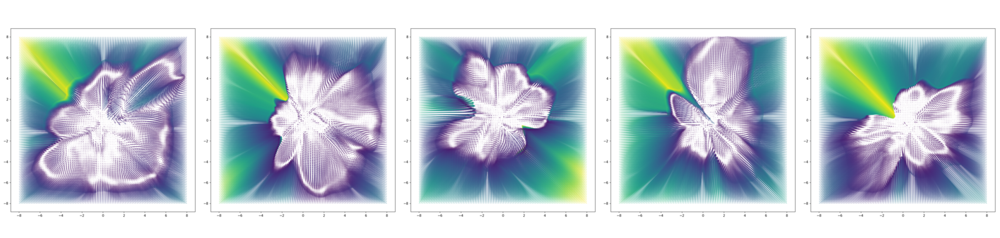
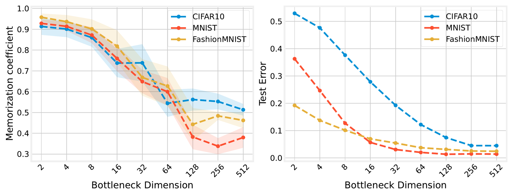
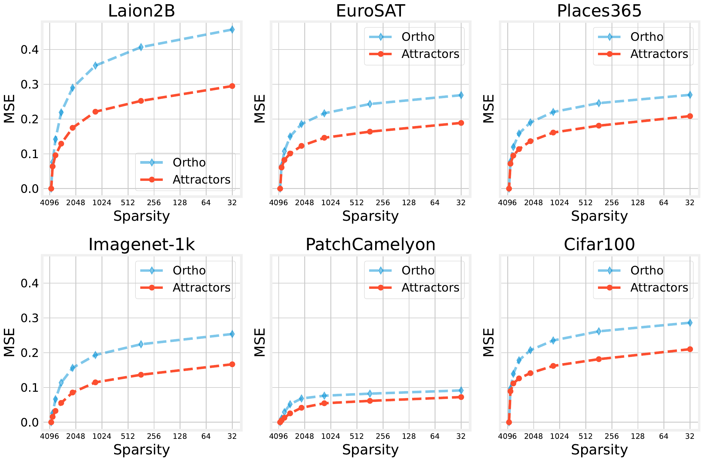
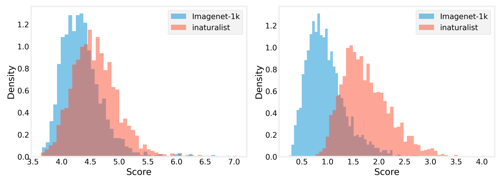

Navigating the Latent Space Dynamics of Neural Models
Reading an autoencoder as a vector field on its own latent manifold — and using its attractors as a representation of the model
Neural networks compress data into compact latent representations. This paper reads any autoencoder as a dynamical system on its latent manifold: iterating the encode–decode map, with no extra training, induces a latent vector field whose trajectories and fixed points expose properties of both the model and the data. Standard training biases the map toward local contraction, so attractors emerge naturally. Treating these attractors as a representation of the network enables analyzing the memorization–generalization spectrum throughout training, probing the knowledge stored in a model’s weights without any input data, and flagging out-of-distribution samples from their trajectories — validated on vision foundation models including Stable Diffusion’s autoencoder and ViT-MAE.
A model as a vector field
An autoencoder is usually read as a one-shot map: encode an input to a latent code, decode it back. This paper takes a different view. Compose the decoder with the encoder to form the latent self-map f(\mathbf{z}) = E \circ D(\mathbf{z}), then iterate it — f(\ldots f(f(\mathbf{z}))) — and the model becomes a dynamical system on its own latent space. No retraining is involved; the dynamics are already latent in the trained weights.
Introducing a discrete time index t, the iteration defines the discrete ODE
\mathbf{z}_{t+1} = f(\mathbf{z}_t), \qquad \mathbf{z}_0 = \mathbf{z},
which discretizes the continuous flow \partial \mathbf{z}/\partial t = f(\mathbf{z}) - \mathbf{z}. The map f thus pushes forward a latent vector field V:\mathbb{R}^k\to\mathbb{R}^k whose trajectories trace nonlinear paths through latent space. By the Banach fixed-point theorem these trajectories have unique solutions when f is contractive — a Lipschitz constant C<1 — and they settle into attractors, fixed points \mathbf{z}^* = f(\mathbf{z}^*) toward which nearby initial conditions converge.1
1 Formally, a fixed point is an attractor when every eigenvalue of the Jacobian of f at \mathbf{z}^* is strictly less than one in absolute value. The set of initial conditions flowing to a given attractor is its basin of attraction.

Why neural maps tend to contract
The whole picture depends on f being locally contractive near the data, and the paper argues this is the common case rather than the exception. Three ingredients in standard training pipelines push the Jacobian’s spectral norm down:
- Initialization bias. Standard schemes preserve activation variance under i.i.d. assumptions, but real data is correlated and residual connections break weight independence; empirically networks skew toward contractive maps. A 2D field is globally contractive toward a single attractor at the origin at initialization.
- Explicit regularization. Weight decay penalizes parameter norms (directly shrinking the Jacobian spectral norm in the linear case), and a small bottleneck dimension k caps the Jacobian rank, since \mathrm{rank}(J_E)\le k.
- Implicit regularization. Augmentations — Gaussian noise in denoising AEs, masking in masked AEs — penalize sensitivity along specific directions, a local, nonparametric pressure on J_f.
A key theoretical result ties the two together: when f is locally contractive on a neighborhood \Omega of the latent support (with \sup_{\mathbf{z}\in\Omega} \lVert J_f(\mathbf{z})\rVert_\sigma \le L < 1), the latent dynamics f(\mathbf{z}) - \mathbf{z} are locally proportional to the score \nabla_\mathbf{z}\log q(\mathbf{z}) of the marginal latent density. The field nonlinearly projects samples toward high-probability regions of the data manifold.2
2 When J_f is symmetric (e.g. tied-weight AEs) the field is conservative — the gradient of a potential — and the AE defines an energy-based model q(\mathbf{z}) = e^{-E(\mathbf{z})}. The general, non-conservative case is handled empirically.
Attractors as a representation of the model
If attractors summarize where trajectories end up, what do they encode? The paper’s central claim is that they place a model on a spectrum between memorization and generalization, governed by regularization strength. A proposition bounds the test reconstruction error of any sample by two terms: an error to prototype (how well a decoded attractor stands in for the data point) plus a coverage error (how far the latent code sits from its nearest attractor). Memorization means attractors sit exactly on training points — zero prototype error, but narrow coverage; generalization needs attractors that both cover the latent space and serve as good prototypes for unseen data.
To test this, the authors trained 30 convolutional autoencoders on CIFAR, MNIST, and FashionMNIST, sweeping the bottleneck dimension k from 2 to 512 — a hard regularizer that caps \mathrm{rank}(J_f)\le k. They measure memorization with a memorization coefficient, the cosine similarity of each decoded attractor \mathbf{x}^* = D(\mathbf{z}^*) to its nearest training point, and measure generalization as plain test error.

The same memorization-to-generalization transition plays out across training for a fixed model (a convolutional AE on MNIST with k=128): the network first memorizes — high memorization coefficient — then generalizes to low test error, with the number of distinct attractors growing from a single fixed point and stabilizing in step with the test loss. The authors stress this memorization is the over-regularized regime, distinct from the overfitting regime of extreme overparameterization.
Two attractors are counted as distinct when \cos(\mathbf{z}_1^*, \mathbf{z}_2^*) \le 0.99; attractor statistics are computed from 5000 random samples drawn from the train, test, and \mathcal{N}(0,I) distributions.
Probing a foundation model with no data
Because attractors live in the weights, they can be recovered from noise alone. Starting from \mathbf{Z}_n \sim \mathcal{N}(\mathbf{0}, I) and solving f(\mathbf{Z}_n^*) = \mathbf{Z}_n^*, the authors extract N = 4096 attractors (matching the latent dimensionality) from the autoencoder of Stable Diffusion, pretrained on LAION-2B — without touching any input data. These noise attractors form a dictionary; reconstructing 500 held-out test images per dataset via Orthogonal Matching Pursuit at varying sparsity, the attractor dictionary beats a random orthonormal latent basis on all six evaluation datasets — LAION-2B, ImageNet, EuroSAT, CIFAR100, PatchCamelyon, and Places365 — spanning natural, medical, and satellite imagery.

Trajectories detect distribution shift
The trajectories, not just their endpoints, carry information about the learned distribution. For an in-distribution attractor set \mathbf{Z}_{\text{train}}^* computed from 2000 ImageNet images on a pretrained ViT-MAE, the authors score a test sample by the mean distance of its trajectory to the training attractors. An out-of-distribution sample either lands in a different basin or converges differently, and the trajectory score separates the two cleanly — far better than a K-nearest-neighbor baseline (K = 2000, adapted from prior work).
| Method | SUN397 FPR ↓ | SUN397 AUROC ↑ | Places365 FPR ↓ | Places365 AUROC ↑ | Texture FPR ↓ | Texture AUROC ↑ | iNaturalist FPR ↓ | iNaturalist AUROC ↑ |
|---|---|---|---|---|---|---|---|---|
| Latent trajectory distance | 29.60 | 91.20 | 29.95 | 90.99 | 25.85 | 92.63 | 29.85 | 91.29 |
| KNN baseline | 100.00 | 42.59 | 100.00 | 32.36 | 34.50 | 89.41 | 86.35 | 68.60 |

Why it matters
Reading a trained autoencoder as a vector field unifies several phenomena under one lens. Memorization becomes just one kind of attractor (Radhakrishnan et al. 2020; Jiang and Pehlevan 2020); the score-function connection links the field to what regularized autoencoders learn about the data-generating distribution (Alain and Bengio 2014; Vincent et al. 2008); and the attractor picture echoes classical associative-memory dynamics (Hopfield 1982; Ramsauer et al. 2020) while sitting alongside other dynamical-systems views of networks such as neural ODEs (Chen et al. 2018) and deep equilibrium models (Bai et al. 2019). The framework extends to real foundation models — Stable Diffusion’s autoencoder (Rombach et al. 2022) trained on LAION (Schuhmann et al. 2022) and masked autoencoders (He et al. 2022) — and the authors note that the construction relies on an invertible encode–decode loop, so generalizing it to purely discriminative or self-supervised models (where the network is not invertible) is left as future work, with preliminary evidence given in their appendix.
A copyable BibTeX entry for this page is generated automatically below; full references appear in the margin.
Citation
@inproceedings{fumero2025,
author = {Fumero, Marco and Moschella, Luca and Rodolà, Emanuele and
Locatello, Francesco},
title = {Navigating the {Latent} {Space} {Dynamics} of {Neural}
{Models}},
booktitle = {International Conference on Learning Representations
(ICLR)},
date = {2025-05-28}
}